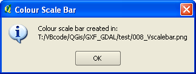

Colour Scale Bar for One-Band Rasters
V0.12.2 - 10 February 2019
This QGIS plugin creates a colour scale bar image file (png) for a coloured 1-band raster. Also works for QGIS native colour schemes thanks to Thomas Wahlmüller.Use the created colour scale bar as legend in print composer.
Distributed under the GPL licence
This plugin works on QGIS version 2.x, and is backward compatible with .qml's
generated with QGIS versions 1.x.
Once installed the bccscbar plugin can be found in the 'Raster/Raster Colours' menu.
--- How to use this app ---
- Select a QGIS .qml file containing a saved colour palette
OR select a colour palette file (as generated by '1-band
raster colour table' OR use the currently selected
one-band raster layer from the Layers panel (by selecting the "Use current raster" button).
The colour palette can be of type: DISCRETE,
INTERPOLATED or EXACT.
- Fill in the relevant info:
At minimum you have to define the aspect of the final colour scale
bar: either vertical or horizontal.
- From V0.4.0, you can click on the 'Sel out dir...' button to select an output folder to save the colour scale bar image file to. By default, the image is saved in the same folder as the palette file. Take care that when "Use current raster" is selected, the default folder for the saved image of the colour scale bar is your system temporary folder.
- Click 'Create' to create the colour scale bar image file. The file
is located in the same folder as the input file.
- Open your favorite image viewer and point it to the file returned by
the plugin.
- Tweak the parameters and run again until the time you are satisfied
with your colour scale bar.
- Use the created colour scale bar as legend in print composer.
Guided tour:
On completion, the plugin returns the name of the created colour scale bar:

NOTES
- Results are not guaranteed. You will
perhaps need to tweak the parameters in order to get acceptable
results!
- The title can contains more than one line. Separate each line
with '\\n'.
- The units text can only be one line. An extra lines are ignored.
- The colour table files (*.txt or *.qml) do not contain information about the minimum
value. If needed, you will have to enter it in the 'Minimum'
textbox.
- The 'enforce'checkbox is to force the decimal places to be that
number, padding with trailing 0s if necessary.
- The resolution of the colour scale bar image is 72 dpi.
- The application can be run stand-alone, with no QGIS. Please see the file standalone.py for more information. You still need to have Python and Qt installed on your machine in order to use the standalone version. But for a quick and dirty 'go at the app' it could be better that launching QGIS to run the plugin. Note that the standalone.py has not been updated to the latest version (last available version is 0.5.1!!!)
Examples:
|
|
A vertical scale bar.
Parameters:
Title = SRTM
Units = m [AMSL]
Enforce decimals = False
Number of decimals = N/A
Font size = 10
Automatic tick = True
number of Ticks = N/A
box Width = 50
box Height = 2
Annotate Extrema = False
minimum value = N/A |
A horizontal scale bar (click for full scale version)
Parameters:
Title = SRTM
Units = m [AMSL]
Enforce decimals = True
Number of decimals = 1
Font size = 10
|
Automatic tick = True
number of Ticks = N/A
box Width = 5
box Height = 20
Annotate Extrema = False
minimum value = N/A |
Please report any bug/problem/wish at the bug tracker.
History
- 0.12.2: WindowDressing: Changed company name.
- 0.12.1: Fixed: Error - missing resources_rc when installing.
- 0.12.0: Fixed: An empty title creates an image cut at the top (reported 2015/12/19).
- 0.11.0: Remove temporary file(s) when not needed anymore.
Plugin no longer available from the Geoproc repository.
- 0.10.0: Add some logic on selection/deselection of current raster.
Tweak ui for beter rendering on different os'es.
- 0.9.0: Add an option to use the colour ramp of the selected one-band raster instead of having to select a file.
- 0.8.0: Fix problem where UI was irresponsive (nothing happened when a button was clicked).
- 0.7.0: Recompile the UI and add internationalisation in the hope that reported problem is fixed.
- 0.6.0: Compatibility with QGIS version 2.x
Can read .qml files from both QGIS versions 2.x and 1.x
- 0.5.1: Contribution from Thomas Wahlmüller.
A summary of the changes:
discrete styles
==========
same as before, no code changed
only function name renamed, to better distingunish between the
functions of other annotations
interpolated
========
interpolation is done in "cdlgSCBR.py"
annotion is different to discrete (at least 2 ticks at minimum and
maximum, more ticks are spread equaly)
exact
====
annotation is in the middle of the color, also the height/width of
the bar is set according to annotation
a border is drawn around every element
horizontal bar: minimum box width is maximum annotation length
vertical bar: minimum box height is annotation height
Thanks Thomas!
- 0.4.1: Title font is now linked to the selected label font.
- 0.4.0: Add the 'Select output folder' button. Remember the last folder used for output and the last folder used for palette selection.
- 0.3.1: Correct visual interface glitches on Ubuntu.
- 0.3.0: Changed button text from (*.tbl) to (*.txt) and removed 'pressed' signal trapping.
- 0.2.0: Changed deprecated call to current call in plugin initialisation.
- 0.1.0: Correct a bug preventing plugin removal from the plugin menu.
- 0.0.1: Original published.
|